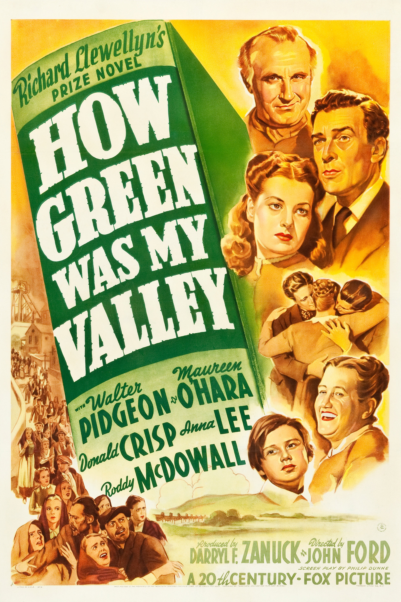

How Green Was My Valley
14th Academy Awards
(Oscars 1942)
10 Nominations, 5 Awards
| Nominations | ||
|---|---|---|
| Category | Nominees | Result |
| Outstanding Motion Picture | 20th Century-Fox | Won |
| Actor in a Supporting Role | Donald Crisp | Won |
| Actress in a Supporting Role | Sara Allgood | Nominated |
| Directing | John Ford | Won |
| Writing (Screenplay) | Philip Dunne | Nominated |
| Cinematography (Black-and-White) | Arthur Miller | Won |
| Film Editing | James B. Clark | Nominated |
| Art Direction (Black-and-White) | Nathan Juran, Richard Day, and Thomas Little | Won |
| Sound Recording | E. H. Hansen | Nominated |
| Music (Music Score of a Dramatic Picture) | Alfred Newman | Nominated |